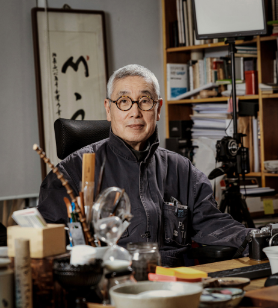

안상수 한글타이포그래피의 선구자

시각디자이너, 타이포그라퍼. 1985년 ‘안상수체’를 멋지어 한글 글꼴의 탈네모 흐름을 이끌었으며, 이후 이상체, 미르체, 마노체 등을 선보였다. 1988년 실험잡지 「보고서/ 보고서」를 창간, 전위적인 타이포그라피를 실험하며 현재까지 한글 타이포그라피를 바탕으로 한 작업을 선보이고 있다. 세계 여러 나라에서 개인전 및 단체전에 참여했으며, 공로를 인정받아 2007년 독일 라이프치히시가 수여하는 구텐베르크상을, 2016년 홍콩디자인센터가 주관한 DFA(Design For ASIA Award)에서 평생공로상을 받았다. 2012년, 20여 년간 교수로 재직하던 홍익대를 그만 두고, 파주출판도시에 독립 디자인 학교 ‘파티(PaTI, 파주타이포그라피배곳)’를 세우는 데 힘쓰며, 활동을 이어가고 있다.
안상수가 제작에 참여한 서체들
아리따 글꼴
나눔 부리 글꼴
마루 부리 글꼴